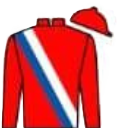
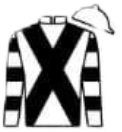
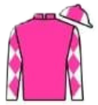
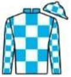
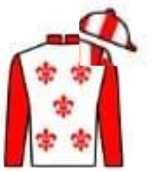

The Matchem Charity Hobby Horse Race
You have opened The Matchem Charity Hobby Horse Race page. Here you can view today’s runners and hear how the race works, learn the rules, and explore the course obstacles. Tap a button below to hear more.
The Matchem Charity Hobby Horse Race
The feature race on the village green
Today’s runners will tackle the famous Matchem course, featuring the Apple Bucket Challenge, the Splash Fence, the Mini Hurdles, and the Willow Cottage Finishing Straight.
How it works
Back your favourite hobby horse for £2 and support today’s charity.
After the race, one supporter of the winning hobby horse will be drawn at random for the prize.
Official Race Rules
All runners must remain mounted on their hobby horse at all times.
Competitors must retrieve one apple from the bucket before continuing.
The Splash Fence and Mini Hurdles must be attempted in full.
Any runner bypassing an obstacle may incur the stern disapproval of the stewards.
The first hobby horse past the finish line is declared the winner.
In the event of dispute, the stewards’ decision is final, especially if delivered while holding tea.
Today’s Runners
1. Pixel Pony

Trainer: Gary PoetRider: Poppy Skip
Owner: Discover Partnership
Quick-thinking runner who always seems one step ahead of the others.
2. Insta Star

Trainer: Miss PosyRider: Freddie Flash
Owner: Listen Racing
Loves the spotlight and usually waves to the crowd on the way round.
3. Hoodie

Trainer: Andy PulloverRider: Bella Bounce
Owner: Ask Syndicate
Cosy competitor who runs best once properly warmed up.
4. Ice Lolly

Trainer: Jack FrostRider: Tommy Toes
Owner: EntryHub Partners
Cool under pressure but may soften in sunny conditions.
5. Jelly Bean Jet

Trainer: Ava SweetRider: Lola Leap
Owner: Hold Partnership
Bursts of speed can surprise even the stewards.
6. Turbo Teddy
Trainer: Mr Cuddles
Rider: Max Zoom
Owner: Know & Co.
Hugely popular and always gives everything to the finish.
Powered by IdexQR®